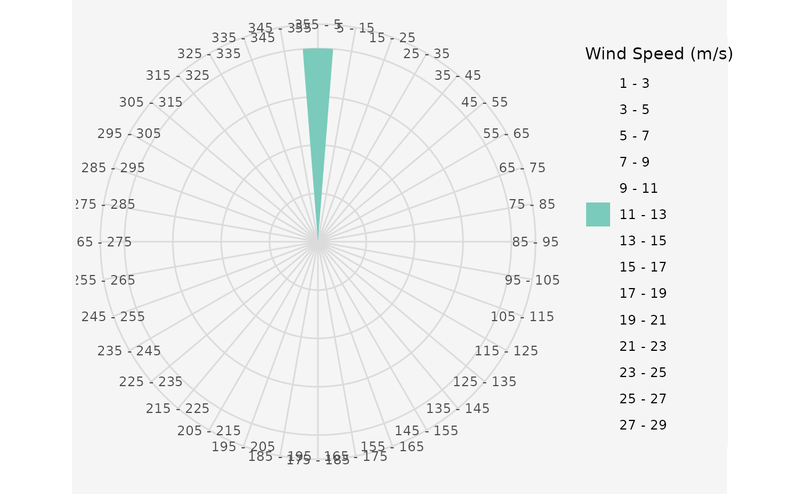

Plot a wind rose of the wind data frame.
plot_windrose( data, spd, dir, spdres = 2, dirres = 10, spdmin = 1, spdmax = 30, palette = "YlGnBu", spdseq = NULL, plotit = TRUE )
Arguments
| data | A data.frame containing the wind information |
|---|---|
| spd | The column of the wind speeds in "data" |
| dir | The column of the wind directions in "data" |
| spdres | The increment of the wind speed legend. Default is 2 |
| dirres | The size of the wind sectors. Default is 10 |
| spdmin | Minimum wind speed. Default is 1 |
| spdmax | Maximal wind speed. Default is 30 |
| palette | A color palette used for drawing the wind rose |
| spdseq | A wind speed sequence, that is used for plotting |
| plotit | Should the windrose be plotted? Default is TRUE |
See also
Other Plotting Functions:
interpol_view(),
plot_cloud(),
plot_development(),
plot_evolution(),
plot_fitness_evolution(),
plot_heatmap(),
plot_parkfitness(),
plot_result(),
plot_viewshed(),
plot_windfarmGA(),
random_search_single()
Examples
## Exemplary Input Wind speed and direction data frame # Uniform wind speed and single wind direction data.in <- data.frame(ws = 12, wd = 0) windrosePlot <- plot_windrose(data = data.in, spd = data.in$ws, dir = data.in$wd)# Random wind speeds and random wind directions data.in <- data.frame(ws = sample(1:25, 10), wd = sample(1:260, 10)) windrosePlot <- plot_windrose(data = data.in, spd = data.in$ws, dir = data.in$wd)